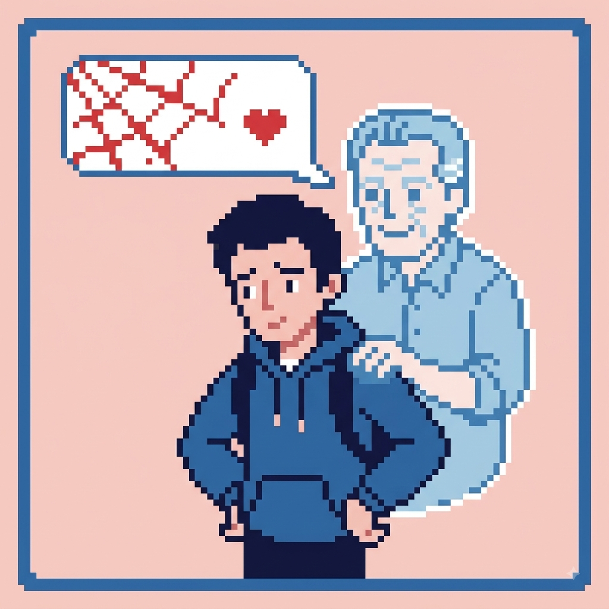

Com Grandes Poderes Vem Grandes Responsabilidades
Por: Vitória de Oliveira
O famoso lema de Peter Parker reflete a formação da moralidade e a carga de responsabilidade e culpa no desenvolvimento do super-herói.
Fonte: Psicologia e Quadrinhos